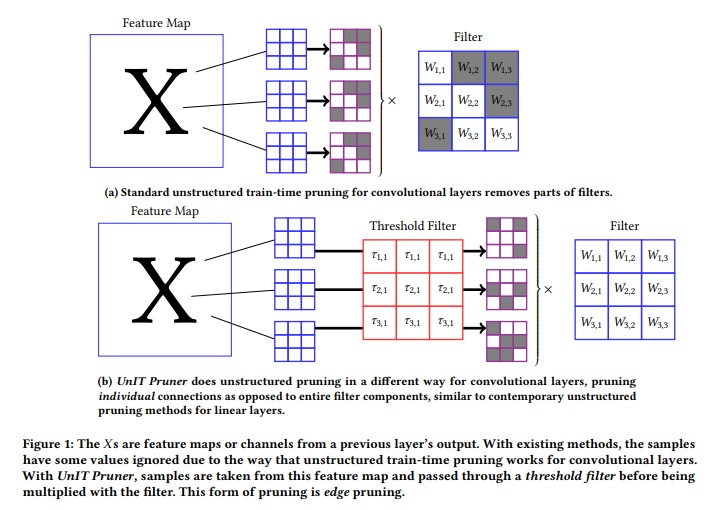
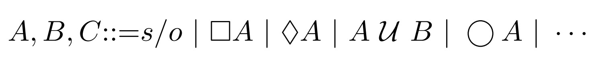

About me:
Papers:
UnIT Pruner: Unstructured Inference-Time Pruning for Battery-Free Systems - Ashe Neth, Mohammad Nur Hossain Khan, Subrata Biswas, Asif Salekin, Bashima Islam
Preprint: link
In Review - The ACM Conference on Embedded Networked Sensor Systems (ACM SenSys 2025)

With deep neural networks (DNNs) being increasingly deployed on low-resource devices, achieving efficiency without sacrificing accuracy has become a critical challenge. Model pruning, commonly performed during training, is a common approach to reducing model size and computational cost, even in environments where computational resources are not limited. However, traditional pruning methods are inherently static, often leading to accuracy losses that hinder their applicability in dynamic, real-world settings. Although some inference-time pruning techniques exist, these methods are generally structured, introducing similar accuracy compromises as conventional pruning methods.In this paper, we propose a novel, unstructured pruning algorithm that performs adaptive, input-specific pruning during inference: Unstructured Inference-Time Pruner (
Pronoun Logic - Rose Bohrer, Ashe Neth
Queer in AI Workshop at The Nations of the Americas Chapter of the Association for Computational Linguistics (Queer in AI @ NAACL 2024)
arXiv: link
 Historically, computational linguistics has been focused on rule-based semantics. This approach is still useful for parts of language that demand correctness such as with identity. This paper offers potential formalisms that would allow users to describe complex personal identities.
Particularly in transgender and nonbinary (TGNB) communities, it is an increasingly common practice to publicly share one's personal pronouns so that we may be gendered correctly in others' speech. Many of us have nuanced desires for how we are gendered, leading us to use more complex descriptions of our wishes; for example, the descriptor 'she/they'.
We observe that these descriptions of our wishes have the structure of a little language all their own. We thus propose formal logic as a tool for expressing one's personal pronouns and potentially other aspects of gender. We explore three potential logical foundations (linear logic, temporal logic, and free logic with definite descriptions) and their trade-offs.
Selected Projects:
CUDA Neural Network
Created a simple machine learning framework using CUDA.
Experimented with several novel optimizer algorithms.
Experimented with different ways of moving and storing memory on the GPU and its impact on processing speeds.
CUDA Ray Casting Engine
Created a raycasting library using my CUDA/OpenGL interoperability library for writing to the screen and CUDA for the internal logic.
Experimented with different ways of moving and storing memory on the GPU and its impact on processing speeds.
Library For CUDA/OpenGL Interoperability
Created a CUDA/OpenGL interoperability library for simplifying the process of exposing framebuffers to CUDA via OpenGL pixelbuffers.